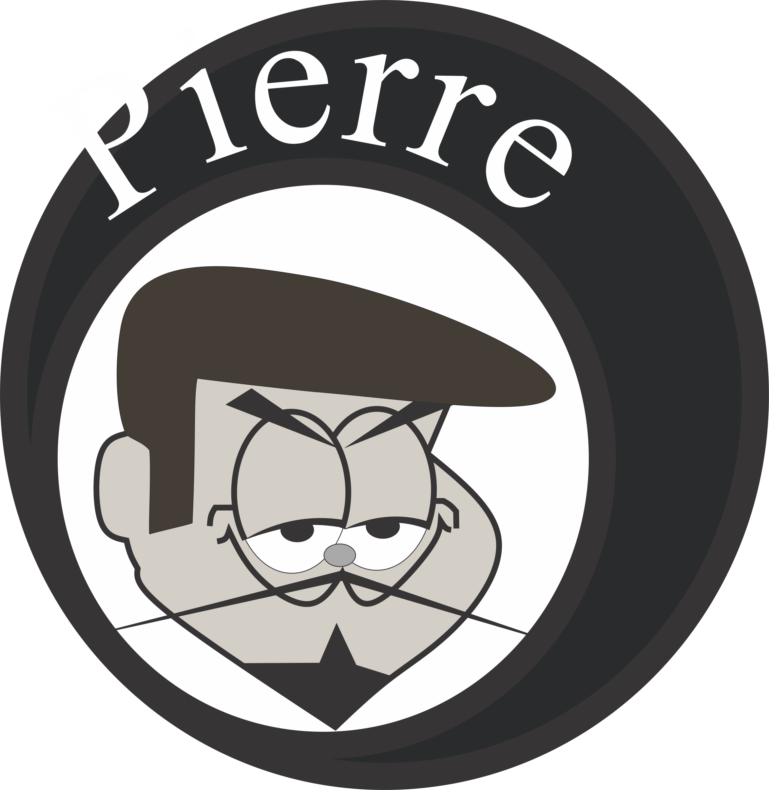
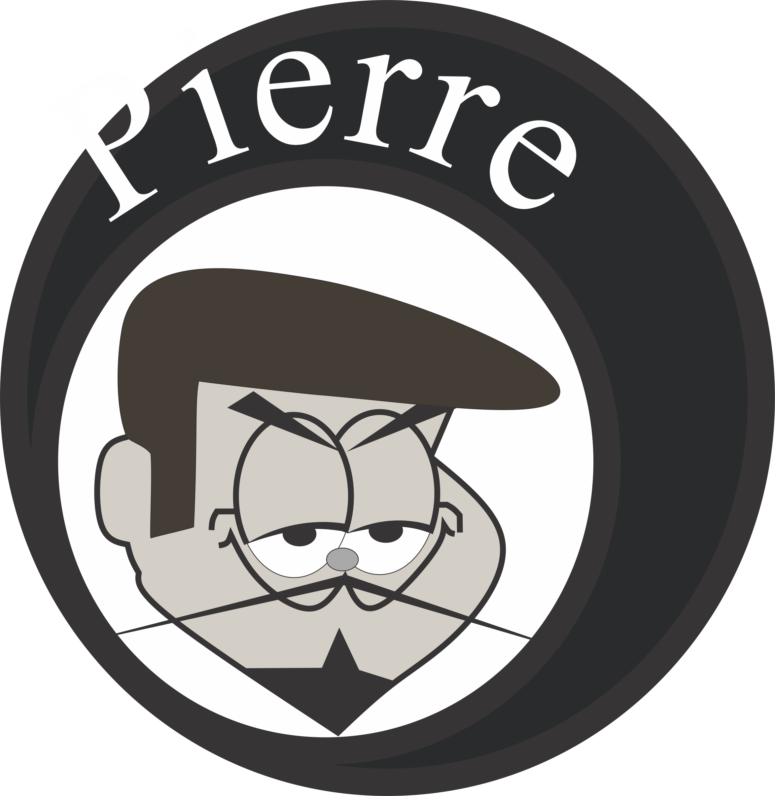

Objetivo
Apresentar as bases do design gráfico de produção de sítios Internet com emprego de softwares. Projetar mock-ups (cenas) usando o software de design digital, em seguida implementar o projeto como um sítio Internet. Identificar os principais componentes dos softwares para design gráfico: espaço de trabalho, canvas, painéis, ferramentas e menus. Definir padrões de cores e empregá-los em esquemas de cores. Definir, descrever e empregar os elementos de artes gráficas: o ponto, a linha, a forma, a direção, o tom, a cor, a textura, a dimensão, a escala e o movimento. Projetar logos e marcas. Desenvolver um logo para própria página. Descrever e utilizar camadas. Otimizar organização de arquivos para trabalho em equipe.
Conhecer e empregar os padrões de gravação de arquivos de imagem. Escolher o programa mais adequado para tratamento de imagens. Definir e criar um guia com os quatro elementos básicos de qualquer sítio (cabeçalhos, navegação, conteúdo e rodapé) com aplicação de padrões de design, esquemas de cores e fontes tipográficas. Projetar vários estados de interação e comportamento. Criar um sítio completo com várias páginas com todos os elementos de design, HTML e CSS estudados no curso. Empregar os padrões de resolução de tela e impressão e saber converter medidas aplicadas ao desenvolvimento de sítios para Internet. Calcular tamanhos seguros dos layouts dos sítios Internet.
Ementa
Introdução ao Design digital. Otimização de imagens para padrões Web de composição. Criação de marcas e logos para sítios Internet. Transferência do design para o sítio Internet.
Produção em sala:
Algumas imagens do que foi produzido durante as aulas de Design Digital:


 
